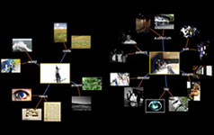
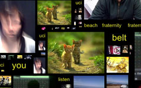
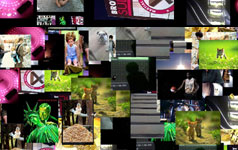
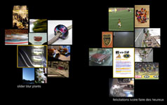

|  |  |
|  |  |
Cell Tango has been presented at the Theatre Poitiers Inaugural Event, France in September 2008. It was exhibited at the Ford Gallery of Eastern Michigan University in Ypsilanti, Michigan in Fall 2008. In January 2009 it was shown as part of Scalable Relations, an exhibition at the Beall Center curated by Christiane Paul. It is currently being exhibited at the Davis Museum at Wellesley College in Massachusets.
[project page]
[current flickr archive]
[Scalable Relations]
[TAP]
[Ford Gallery at EMU]
[Brochure for Davis Museum.pdf]
[Davis Museum at Wellesley]